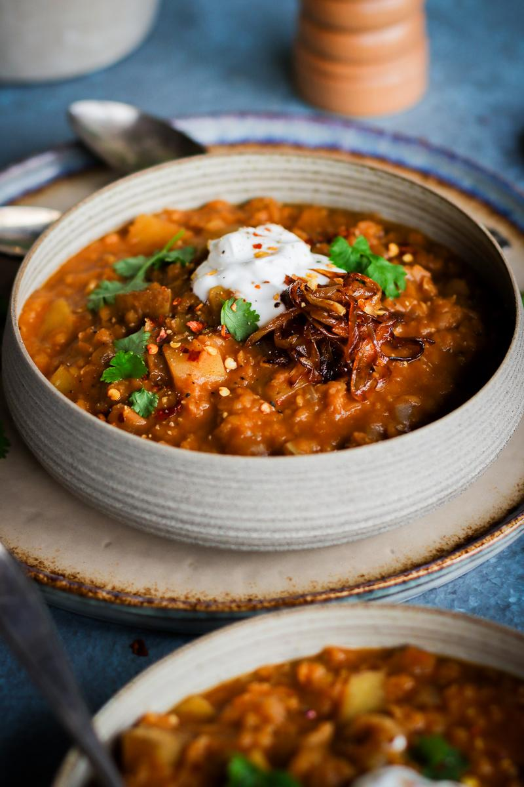

Ingredients
Soup
- 2 tsp (10 mL) vegetable oil
- 1 medium onion, diced
- 4 cups (960 mL) water
- 1 vegetable bouillon cube, crushed
- 1 cup (192 g) dry red lentils, rinsed
- 1 medium potato, diced into 1 cm cubes
- 1 Tbsp (7 g) paprika powder
- 2 tsp (5 g) onion powder
- 2 tsp (6 g) garlic powder
- 2 tsp (10 mL) balsamic vinegar
- ⅛ tsp ground black pepper, or more to taste
- 1 pinch salt, or more to taste
Serve with
- 1 cup (240 mL) unsweetened coconut yogurt
- 3 slices whole wheat bread, toasted
Optional Toppings
- caramelized onions
- chili flakes
- fresh parsley
Potato & Red Lentil Soup
This protein-packed soup requires little supervision, takes only a few minutes to prep, and simmers away on the stove by itself until it's ready to be enjoyed! We aways like to make a huge pot, and store batches in the freezer to enjoy later on.
Directions
- To a large pot on medium-high heat, add the oil. When hot, add the onion and sauté until golden, about 5 minutes.
- Add in the remaining ingredients. Bring to a boil and then reduce to a simmer. Partially cover with a lid and cook for 15 minutes, or until the lentils and potato are cooked through.
- Taste test, adding more salt and pepper if desired and add more water depending on how you like the consistency of your soup.
- Serve with yogurt, bread, and any other desired toppings. Enjoy!
Storage
- Store in an airtight container in the fridge for up to 4 days.
- Store in the freezer for up to 2 months.